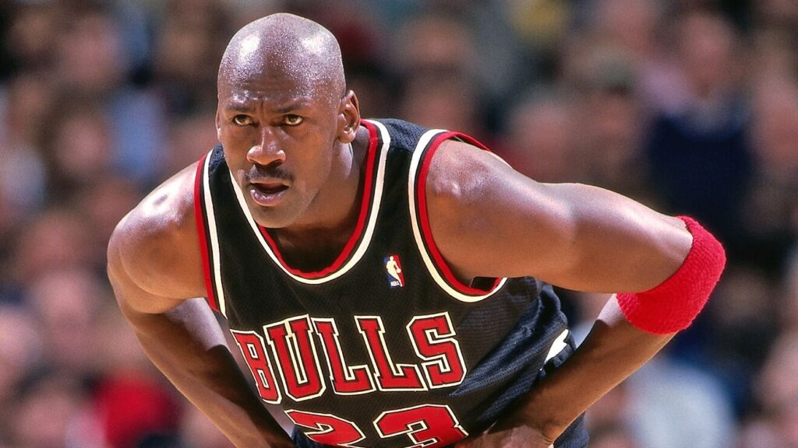
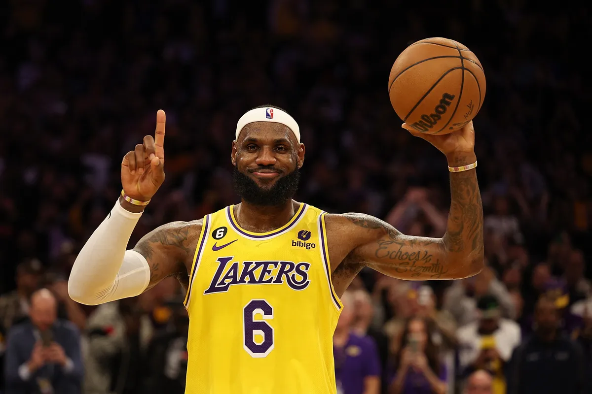
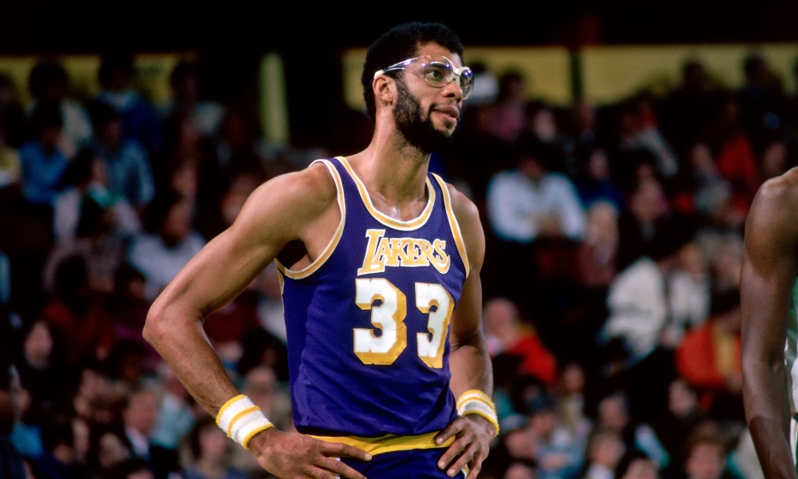
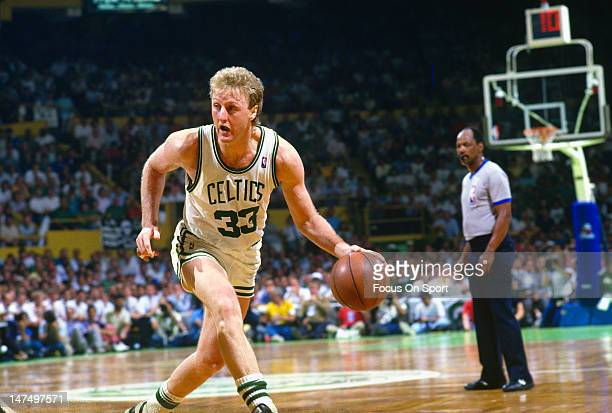

Aqui está o top 5 de jogadores de basquete, juntamente com alguns tópicos sobre cada um deles:
Michael Jordan

- Conhecido como "Air Jordan", é amplamente considerado o maior jogador de todos os tempos.
- Venceu seis campeonatos da NBA com o Chicago Bulls durante os anos 90.
- Possui uma habilidade incrível de pontuar e uma competitividade feroz.
- Foi eleito o MVP da NBA cinco vezes e ganhou 10 títulos de pontuação.
Lebron James

- Uma combinação rara de força, velocidade e habilidade, LeBron é considerado um dos jogadores mais versáteis da história.
- Ganhou quatro campeonatos da NBA, dois com o Miami Heat, um com o Cleveland Cavaliers e um com o Los Angeles Lakers.
- É conhecido por suas jogadas espetaculares, visão de jogo e liderança em quadra.
- Tem uma longa lista de prêmios individuais, incluindo quatro prêmios de MVP da NBA.
Kareem Abdul-Jabbar

- É o maior pontuador da história da NBA, com 38.387 pontos durante sua carreira.
- Ganhou seis campeonatos da NBA, sendo um deles com o Milwaukee Bucks e cinco com o Los Angeles Lakers.
- É famoso pelo seu icônico arremesso chamado "skyhook".
- Foi eleito o MVP da NBA seis vezes e é considerado um dos jogadores mais dominantes do garrafão.
Magic Johnson

- Jogador extremamente talentoso e versátil, era conhecido por suas habilidades de passe e visão de jogo únicas.
- Ganhou cinco campeonatos da NBA com o Los Angeles Lakers.
- Foi um dos principais jogadores da "Era Showtime" do Lakers nos anos 80.
- Teve uma rivalidade épica com Larry Bird, o que ajudou a impulsionar a popularidade do basquete na época.
Larry Bird

- Considerado um dos maiores jogadores de todos os tempos, Bird era um atirador excepcional e líder nato.
- Ganhou três campeonatos da NBA com o Boston Celtics.
- Tinha uma rivalidade intensa com Magic Johnson, começando nos tempos universitários até suas carreiras profissionais.
- Foi um jogador altamente condecorado, ganhando três prêmios de MVP consecutivos da NBA.